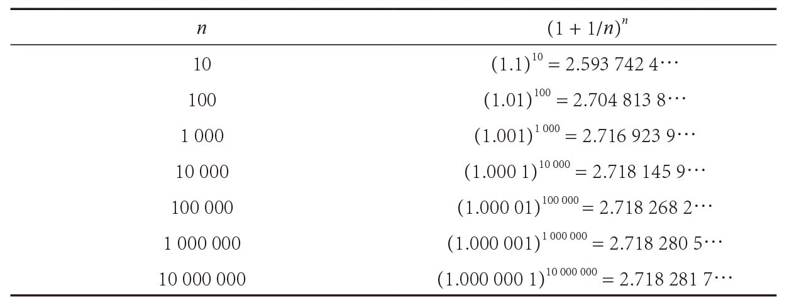
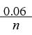
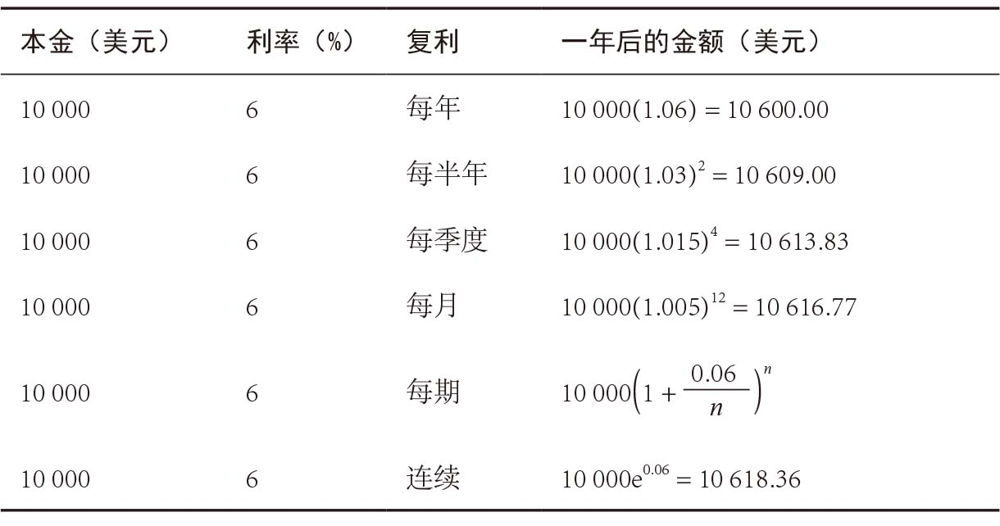
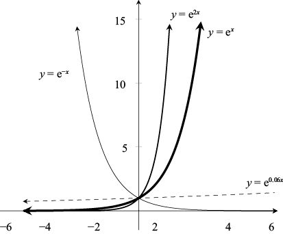
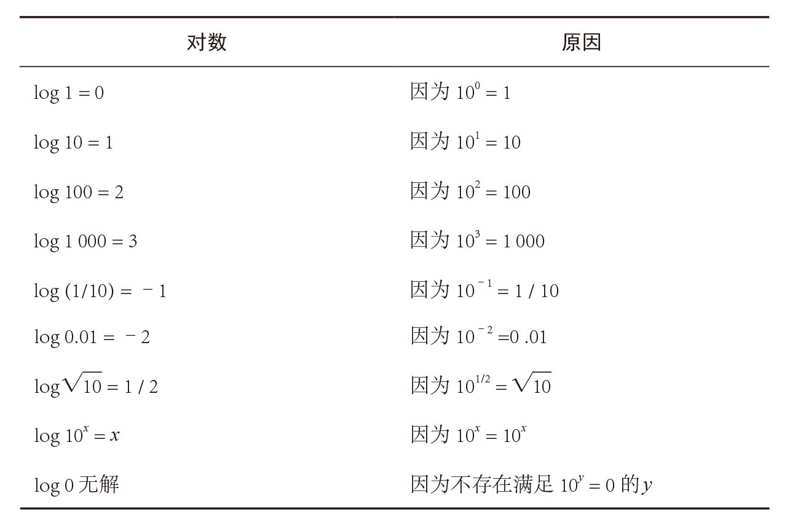
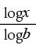

(1 + 1/ n)n
(1 + 1/ n)n如果你有科学计算器，请做一做下面这个实验。
1．在计算器里输入一个你熟悉的七位数（可以是电话号码、证件号码，也可以将你喜欢的某个一位数字连续输入7次）。
2．取这个数字的倒数（按下计算器的“1 / x”键）。
3．将得到的结果加上1。
4．对得数进行幂运算，指数为最初的那个七位数（按下“xy”键，然后输入最初的那个七位数，再按下等号键）。
最终得数的前几位是不是2.718？如果得数的前几位与无理数e = 2.718 281 828 459 045…一致，我不会感到奇怪。
这个神秘数字e到底有什么特殊之处？它为什么非常重要？在上面的小实验里，你实际上是在计算(1 + 1 / n ) n的值，且n是一个比较大的数字。如果n不断增大，得数又会发生什么变化呢？一方面，随着n不断增大，数字 (1 + 1 / n) 将会越来越接近1。当1为底数时，无论指数是多少，幂运算的结果都是1。因此，有理由相信，对于大数n，(1 + 1 /n)n的值约等于1。例如，(1.001)100 ≈ 1.105。
另一方面，即使n非常大，(1 + 1 / n ) 仍然略大于1。如果底数是一个大于1的值，随着指数不断增大，得数将变成一个任意大的值。例如，(1.001)10 000 的结果就大于20 000。
问题是，在指数n增大的同时，底数 (1 + 1 / n) 正在减小。在1与无穷大的相持过程中，答案会逐渐接近于e = 2.718 28…。例如，(1.001)1 000 ≈ 2.717。下表列出了函数 (1 + 1 / n )n在n取较大值时的结果。

我们把e定义为(1 + 1 / n)n在n不断增大时逐渐接近的数字。数学界把它称作当n趋于无穷大时(1 + 1 / n)n的极限值，记作：
e = (1 + 1/ n)n
如果用x / n 替代1 / n，其中x为任意实数，那么随着 n / x不断增大，(1 + x / n)n/x这个数字将会不断接近e。两边同时求x次幂[你还记得这个公式吧：(ab )c = abc ]，就会得到所谓的“指数公式”（exponential formula）：
(1 + x / n)n = ex
指数公式有很多非常“有利可图”的应用。假设你的储蓄账户里有10 000美元，年利率为0.06。如果每年结算一次利息，那么截至第一年年底，你的账户里将会有10 000 ×1.06 = 10 600美元。截至第二年年底，你账户里的钱又会变成10 000 ×(1.06)2 = 11 236美元。截至第三年年底，你的账户里有10 000 ×(1.06)3 = 11 910.16美元。以此类推，到第t年年底，你的存款将会变成10 000 ×(1.06)t美元。一般来说，如果我们用利率r来替代6%，一开始时的本金是P美元，那么截至第t年年底，你的存款将会变成P(1 + r ) t美元。
现在，我们假设6%的利率是按半年复利的形式计算的，也就是说每6个月可得到3%的利息。那么，到第一年年底，你的存款为10 000× (1.03)2 = 10 609美元，比年复利时的10 600美元多一点儿。如果是季度复利，那么每年可以结算4次利息，利率为1.5%，一年后的账户金额为10 000 ×(1.015)4 = 10 613.63美元。一般而言，如果每年结算利息n次，那么一年后的金额是：
10 000美元×（1+

）n美元当n取非常大的值时，就叫作连续复利。如下表所示，根据指数公式，一年后的金额就会变成：
10 000 （1+）n =10 000e0.06 = 10 618.36美元

一般而言，如果你最初的本金是P美元，利率为r，以连续复利的方式结算利息，那么t年后，你的存款金额A就可以用下面这个美丽的公式计算出来：
A = Pert
从下图可以看出，函数 y = ex 增长得非常快。同时，我还给出了e2x 和e0.06x 的图像。我们说，这些函数呈“指数增长”。函数 y = e–x 的图像趋近0的速度非常快，呈“指数衰减”。

5x的图像有什么特点呢？由于e < 5 < e2，因此5x 的图像肯定位于ex 和e2x 的图像之间。事实的确如此，因为e1.609…= 5，因此5x ≈ e1.609x。一般情况下，只要我们找到指数k，使 a = ek，函数 ax 就可以表示成指数函数ekx 的形式。我们如何才能找到k呢？答案是利用“对数”（logarithms）。
就像平方根是平方的反函数（这两个函数相互抵消），对数是指数函数的反函数。最常见的对数是以10为底的对数，记作log x。我们说,如果10y = x，那么 y = log x，或者10log x = x。
例如，由于102 = 100，因此log 100 = 2。下面是常用对数表。

对数的用途很多，其中之一是可以将大数转化成我们容易理解的小数。例如，里氏震级利用对数将地震的大小分为1~10级。对数还可以用来测量声音的强度（分贝）、化学溶液的酸碱度（pH值），以及通过谷歌的PageRank算法来评估网页的受欢迎程度。
Log 512是多少呢？利用科学计算器就可以算出log 512 = 2.709…（大多数的搜索引擎也可以胜任这项工作）。这个得数很容易理解，因为512位于102 和103之间，它的对数肯定在2和3之间。对数的目的就是将乘法问题转化为简单的加法问题，它依据的是下面这条定理。
定理：对于任意正数x和y，都有：
log xy = log x + log y
换句话说，积的对数就是对数的和。
证明：利用指数法则，很容易就能证明这条定理。因为：
10log x + log y = 10log x 10log y = xy = 10log xy
所以，10的log x + log y 次幂等于xy。证明完毕。 □
“指数规则”是另一个有用的特性。
定理：对于任意正数x和y，都有：
log xn = n log x
证明：根据指数法则，abc = ( a b )c。因此：
10n logx = (10log x)n = xn
也就是说，xn的对数等于n log x。 □
尽管以10为底的对数在化学和物理科学（如地质学）中的应用非常广泛，但是它本身并没有什么特别之处。在计算机科学与离散数学中，以2为底的对数受欢迎的程度更高。对于任意 b > 0，以b为底的对数logb 都要遵循下面这条规则：
如果 by = x，那么y = logb x
例如，log2 32 = 5，因为25 = 32。底为任意数字b时，前面讨论的对数属性都成立。例如：
blogbx = x logbxy = logb x + logb y logbxn = n logb x
不过，在数学、物理学和工程学的大多数领域里，应用最广泛的还是以e为底的对数。这种对数叫作“自然对数”（natural logarithm），记作ln x。也就是说：
如果ey = x，那么 y = ln x
或者说，对于任意实数x：
ln ex = x
例如，利用计算器就可以算出ln 5 = 1.609…，我们在前文中也算出e1.609 ≈ 5。在本书第11章，我们将更深入地讨论自然对数。
所有科学计算器都可以计算自然对数和以10为底的对数值，但是大多数计算器对其他对数却无能为力。不过，大家不用着急，因为我们可以很轻松地改变对数的底。如果知道某个对数的值，基本上也就知道了所有不同底的对数的值。具体来说，我们可以利用下面这个规则，依据以10为底的对数值得出以b为底的对数值。
定理：对于任意正数x和y，都有：
logbx =

证明：令 y = logb x，则 by = x。两边取对数，即log by = log x。根据指数规则，我们可以得出 y log b = log x。也就是说，y =(log x) / (log b)。证明完毕。 □
例如，对于任意x > 0，都有：
ln x = (log x) / (log e) = (log x) / (0.434…) ≈ 2.30 log x
log2 x = (log x) / (log 2) = (log x) / (0.301…) ≈ 3.32 log x